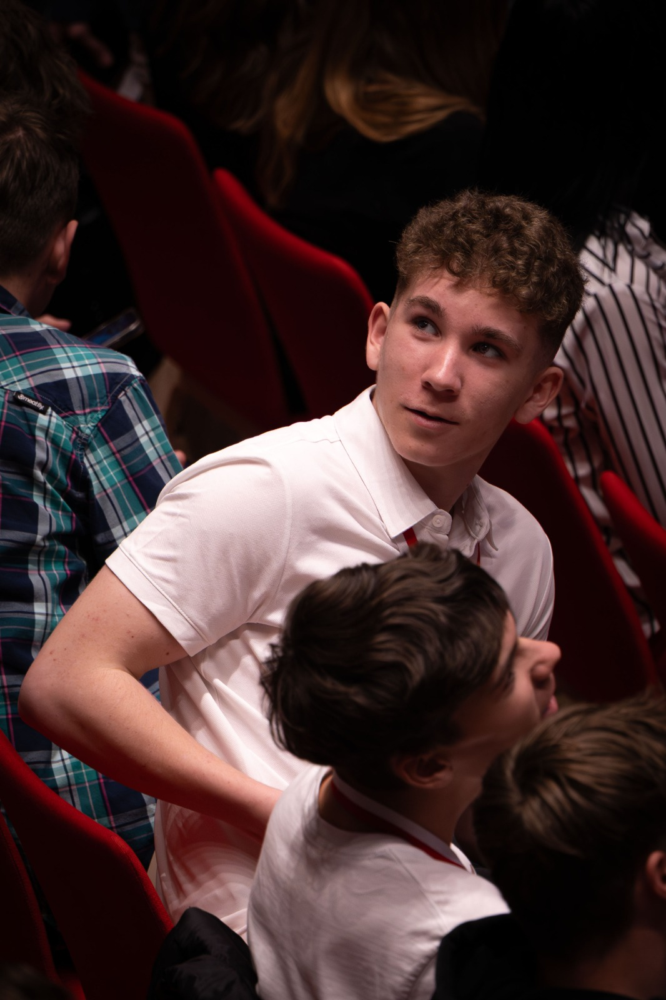
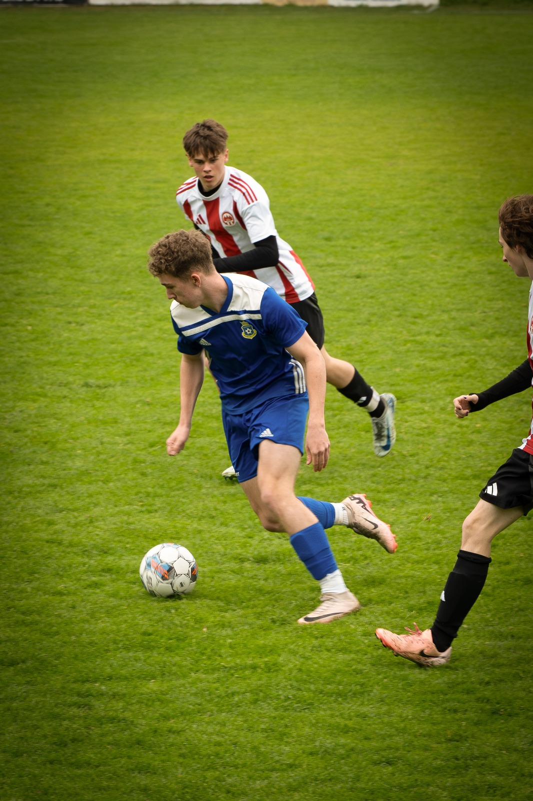
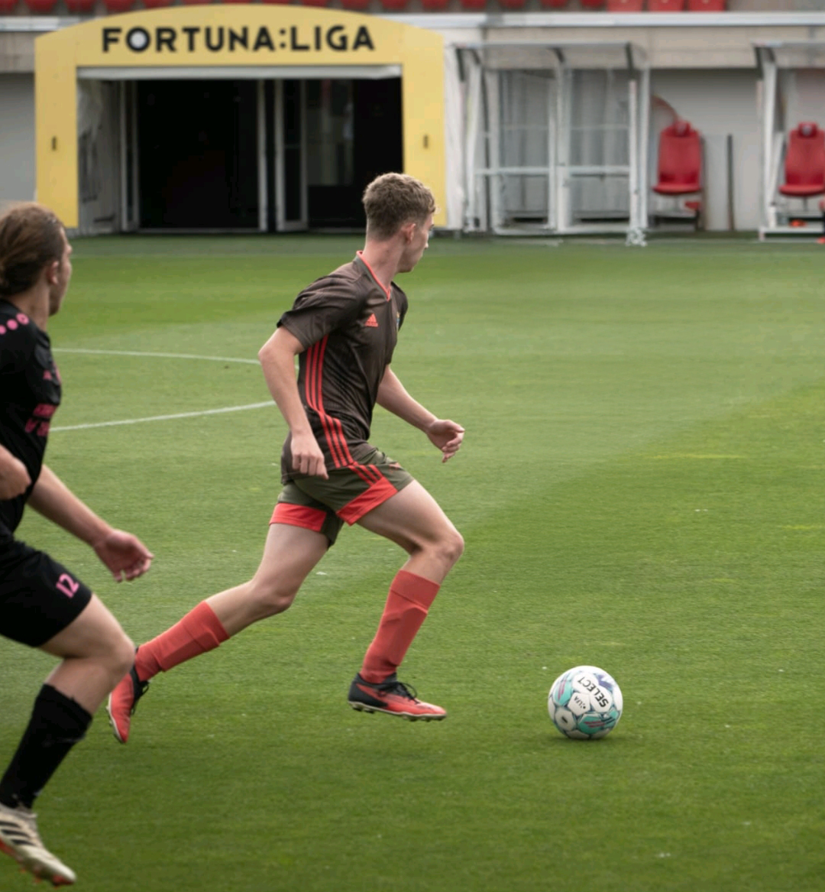
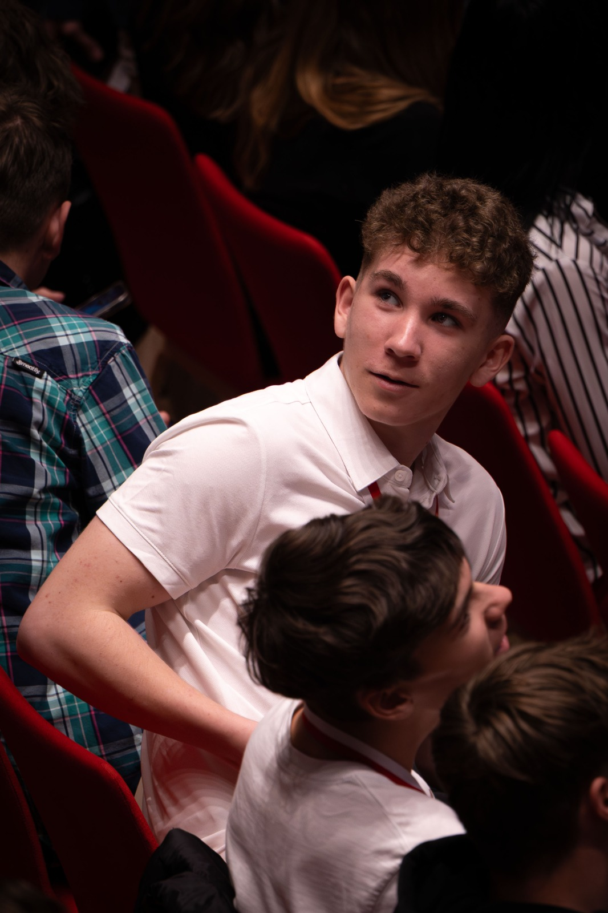
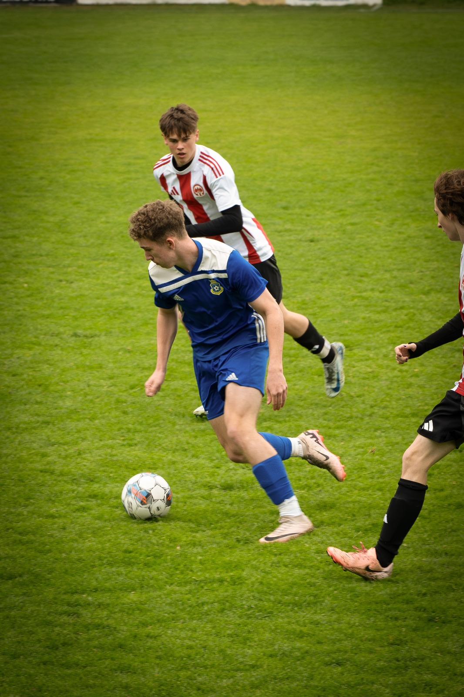
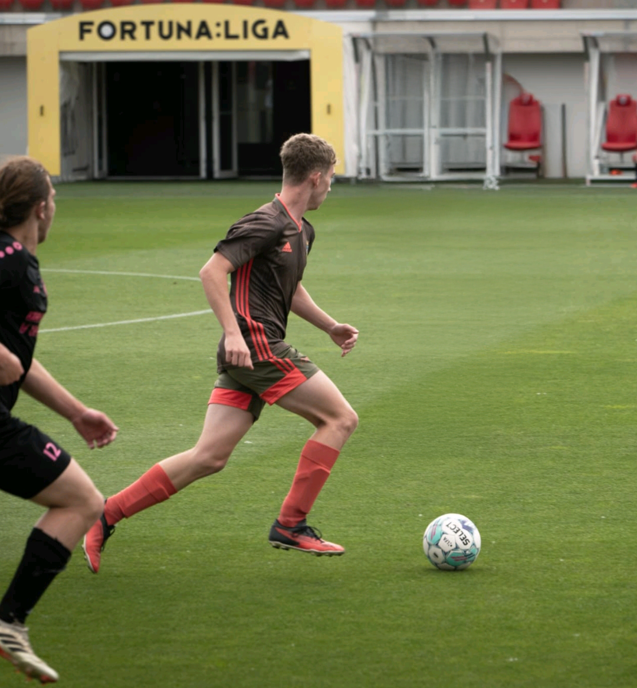

Jmenuji se Daniel Štěrba. Je mi 16 let a jsem student 2. ročníku Střední školy aplikované kybernetiky v Hradci Králové, kde studuji programování a IT. Učím se hlavně HTML, CSS, C#. Ve volném čase se hodně věnuji sportu. Fotbal hraji už 12 let a hraji za FO Lanškroun. Kromě toho chodím do posilovny, abych si udržel kondici a vyčistil hlavu od školy. Dříve jsem hrál na kytaru – jak na elektrickou, tak akustickou – přibližně 9 let. I když už hraju jen občas, hudbu poslouchám téměř neustále. Ve volném čase mě také baví focení, natáčení videí a kreslení, které beru jako relax a zábavu.
 





Ve volném čase rád sportuji, chodím do posilovny a hraju fotbal. Občas hraju na akustickou i elektrickou kytaru. Rád kreslím a zkouším vše co mě napadne. Také hraju počítačové hry a věnuji se kamarádům a rodině. Během toho všeho mě pohání hudba.
Většinu času trávím ve škole nebo se učím, zbytek času vytvářím grafiku, programuji nebo dělám aktivity ve volném čase.